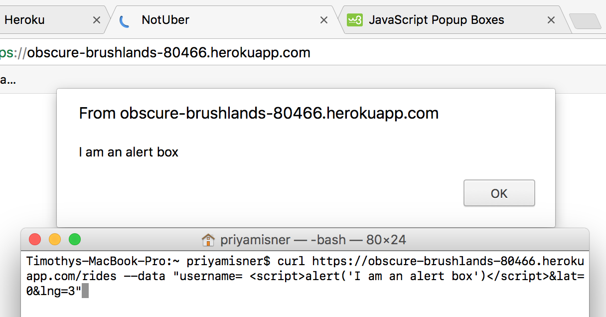
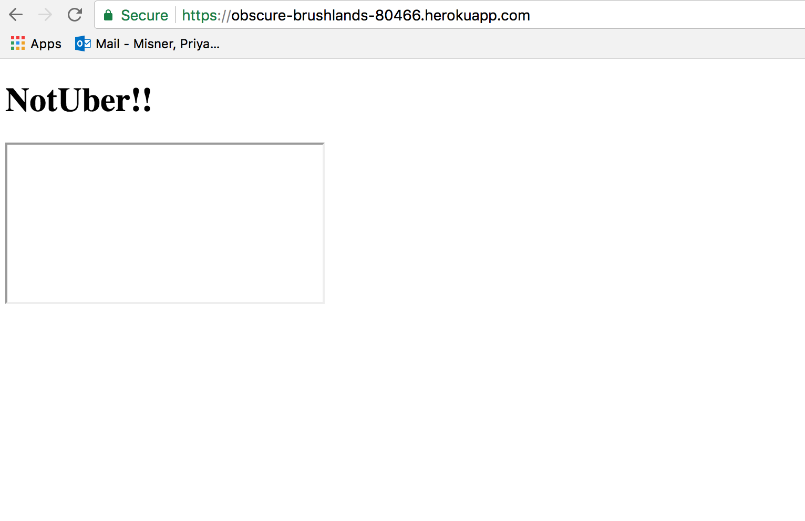
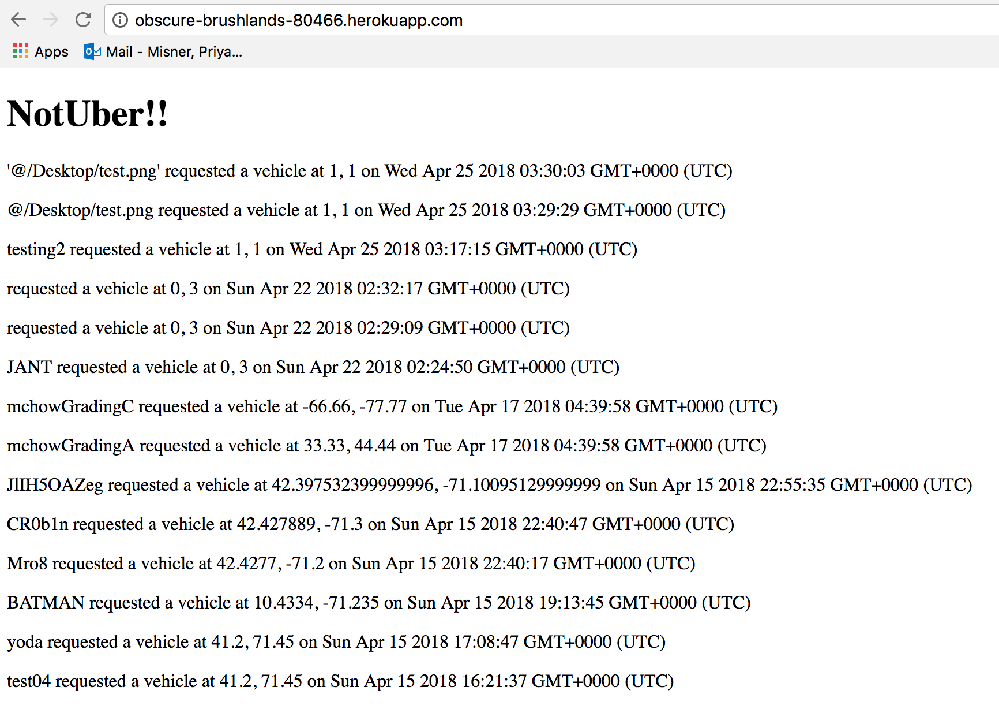
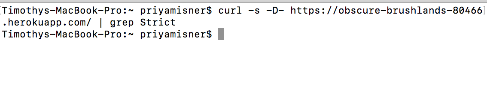

Introduction
For Assignment 4 for Comp 20: Web Programming, I have been assigned to do a security check up on one of my classmate's website for a Ride Sharing Service. I will test both their client-side and server-side and try to find as many security and privacy problems as possible.
Methodology
To find vulnerabilities in my partner's code, I decided to follow along with the OWASP's Web Application Cheat Sheet for security testing. While I did download the Burp Suite, I ended up using solely curl to send information to the website and run attacks against my partner's website. First, I performed attacks without looking at the source code for my partner;s site. After this black box testing was complete, I read thorugh my partners code and then, using that knowledge, continued finding vulnerabilites in the site.
Abstract of Findings
The largest security issue found when testing this Ride Sharing Site was that Cross Site Scripting (XSS) was possible on this site. Since XSS was possible on this website, a whole host of attacks could be performed on the site. One such attack which I sent to this website was a Clickjacking scam.
Slightly lower priority issues I found during testing included HSTS not being enabled and theoretically (since users could input data without limit) a malicious user could send enough data to either shut down the mongo database or start unintentially charging the website owner.
Issues and Technical Analysis
XSS Vulnerabilites
- Issue
- Problem occured when data sent to https://obscure-brushlands-80466.herokuapp.com/rides was displayed on the the home page of the server side for the Ride Sharing Service i.e. https://obscure-brushlands-80466.herokuapp.com/
- Severity
- This is a high severity issue. Once you are able to inject your own JavaScript onto the site, you have immense control of what you can do to the site and what users see. For example, instead of simply creating an alert box that pops up, I could redirect the user to a completely different website or steal the stored cookies in this session, creating a large privacy issue.
- Proof
- The image below shows both the pop-up that appeared on my partner's website after sending the query through curl in terminal also pictured in the image below. 
- Resolution
- To prevent XSS vulnerabilites, the simplest step you could take is to validate the user's input before allowing it to be displayed on the server. For example, the following line of code: query = query.replace(/[^\w\s]/gi, '');which parses a query string sent to the server and removes the carrots around script arguments and thus prevents a browser from executing this malicious javascript. This work around does not completely prevent XSS attakcs but it is a strong step to limiting them
Clickjacking Vulnerability
- Issue
- In a similar vein to Cross Site Scripting, by not validating the user's input before placing into the database, I was able to display html code and specifically an iframe to the server in the first step of something known as a clickjacking attack. Click jacking attacks, also known as UI Redress attacks, work by placing an iframe with an opacity of 0 into another website so that when users are trying to click on a button or fill in a form-field on a website they trust they are actually unknowingly inputting their information into the hidden iframe.
- Location
- Problem occured when data sent to https://obscure-brushlands-80466.herokuapp.com/rides was displayed on the the home page of the server side for the Ride Sharing Service
- Proof
- The image below shows a low opacity iframe I sent to the server and was displayed. If the user clicked on it, they would be within to another website.

- Severity
- Much like the XSS Vulnerability this is a high severity issue because being able to inject this kind of code into a website gives hackers huge freedom and range in the attacks they can perform onto unsuspecting users and the information they can steal.
Denial of Service Vulnerability (theoretical)
- Issue
- Using the mLab MongoDB add-on in Heroku gives 486 MB of free storage before it starts charging. As CORS is enabled, anyone from anywhere could send as much data as they wanted to the server and as long as it was in the proper format (i.e. containg a username, lat, and lng field) it would be input into the database. As long as enough content is sent to the server, the 456 MB storage limit will be reached and the owner of the site will start being charged for something they did not intend at all.
- Location
- Problem occured when sending to https://obscure-brushlands-80466.herokuapp.com/rides via curl
- Severity
- This a low severity issue. In this server, it only accepted queries if they were a string (for username) or a float (for lat, lng) and if they were any other form they were not accepted to the server. When I tried to send an image file to the server via this curl request:
curl https://obscure-brushlands-80466.herokuapp.com/rides --data -F "username=@/Desktop/test.png&lat=1&lng=1"
I received the response:
{"error":"Whoops, something is wrong with your data!"}
Thus, the only way to fill this server would be to send many, many text only inputs into the server and as a string of 255 characters (the maxiumum for a query string) would only be around 500 bytes, it would take over 900,000 entries to fill the server.
- Proof
- As I did not actually try to overload the server with entries (though I did try and fail to send images to the server) there is no proof that this vulnerability is 100% possible which is why it is labeled as 'theoretical. However, because there is no limit on the amount of data a single suer can enter I feel quite confident that a moderatley determined person could set up a command line program to send an excess amount of requests to the server and cause it to shut down.
- Resolution
- By not allowing images to be sent to the server and be stored in the MongoDB databse, the application is currently adequately protected from attacks of this type.
HTTP Strict Transport Security Vulnerability
- Issue
- HTTP Strict Transport Security or HSTS is not enabled for this Ride Sharing Site. HSTS is an opt-in security feature that forces the server to only establish HTTPS connections with servers and ensure that no data is ever sent via HTTP. More importantly, this protocol does not allow the user to accept untrusted security certificates as it forces all traffic to be HTTPS regardless.
- Location
- Since HSTS is not enabled anywhere, the entire site is vulnerable. When HSTS is enabled for all sub-domains of a website, the entire site is protected.
- Severity
- This is a medium-low severity issue. Because the data sent over HTTP is not encrypted like in HTTPS, it is inherently less secure and more vulnerable to attacks. Common attacks that can be preventd by enabled HSTS and causing all connections to be HTTPS include a man-in-the-middle attack where the attacker intercepts user traffic and then the user bypasses the security warning the recieve from their browser about a bad security certificate as well as when a ensuring a site uses HTTPS even when a user inadvertently bookmarkes a site using the HTTP prefix.
- Proof
- If HSTS was enabled on this Ride Sharing Site, the curl command: curl -s -D- https://domain.com/ | grep Strict should give the result Strict-Transport-Security: max-age=...
However, as you can see in the first image below, nothing is returned when the command is run. Further you can see in the second image I can visit the site using only http and not https.


- Resolution
- Enabling HSTS solves the problem of not enabling HSTS. Including this header: Strict-Transport-Security: max-age=31536000; includeSubDomains: preload;
will place the site on the Chrome HSTS preload list which is also used by browsers like Firefox and Safari to force HTTPS connections.
Conclusions
There are very large security vulnerabilites on this site, the largest one being the ability to run Cross Site Scripting on this site. Further, while it was a requirement of Assignment 2 and 3, same origin policy being disabled and CORS being enabled is also a very large security hole as it allows other sites and users to exploit cookies and other sensitive information stored on the site. In future iterations of this project, finding a way to do the same tasks without CORS being enabled would be highly recommended.
References